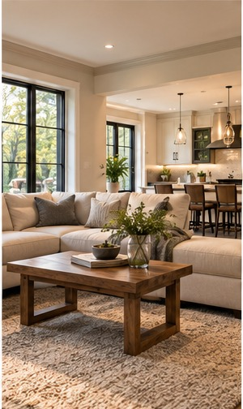

Additions / Renovation Journal
Renovation Planning for Multigenerational Living
Balance independence, accessibility, privacy, and shared space.
Retrospective topic: October 2025 · Oakwaters Journal

Households with different generations often need both connection and separation.
Balance shared and private spaces
Map different household schedules, quiet zones, storage needs and bathroom access. Separate entrances or flexible living areas may improve independence where feasible.
Consider accessibility and local rules
Review door widths, thresholds, stair use and bathroom layouts. A secondary suite or change in occupancy may involve zoning, fire separation and building-code requirements.
Planning a renovation?
Explore what is possible for your home with Oakwaters Construction.
Discuss Your Project →